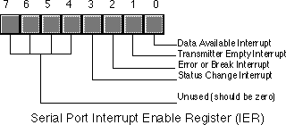
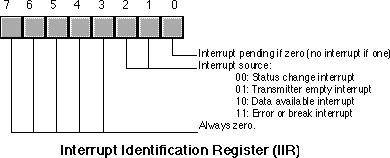
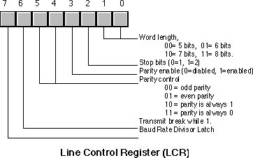
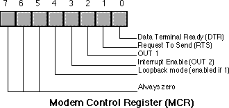
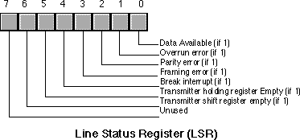
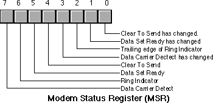

| Table of Content | Chapter Twenty Two (Part 2) |
|
| Table of Content | Chapter Twenty Two (Part 2) |
|
| CHAPTER
TWENTY TWO: THE PC SERIAL PORTS (Part 1) |
||
| 22.1 -
The 8250 Serial Communications Chip 22.1.1 - The Data Register (Transmit/Receive Register) 22.1.2 - The Interrupt Enable Register (IER) 22.1.3 - The Baud Rate Divisor 22.1.4 - The Interrupt Identification Register (IIR) 22.1.5 - The Line Control Register 22.1.6 - The Modem Control Register 22.1.7 - The Line Status Register (LSR) 22.1.8 - The Modem Status Register (MSR) 22.1.9 - The Auxiliary Input Register 22.2 - The UCR Standard Library Serial Communications Support Routines 22.3 - Programming the 8250 (Examples from the Standard Library) |
Copyright 1996 by Randall Hyde
All rights reserved. Duplication other than for immediate display through a browser is prohibited by U.S. Copyright Law. This material is provided on-line as a beta-test of this text. It is for the personal use of the reader only. If you are interested in using this material as part of a course, please contact rhyde@cs.ucr.edu Supporting software and other materials are available via anonymous ftp from ftp.cs.ucr.edu. See the "/pub/pc/ibmpcdir" directory for details. You may also download the material from "Randall Hyde's Assembly Language Page" at URL: http://webster.ucr.edu Notes: This document does not contain the laboratory exercises, programming assignments, exercises, or chapter summary. These portions were omitted for several reasons: either they wouldn't format properly, they contained hyperlinks that were too much work to resolve, they were under constant revision, or they were not included for security reasons. Such omission should have very little impact on the reader interested in learning this material or evaluating this document. This document was prepared using Harlequin's Web Maker 2.2 and Quadralay's Webworks Publisher. Since HTML does not support the rich formatting options available in Framemaker, this document is only an approximation of the actual chapter from the textbook. If you are absolutely dying to get your hands on a version other than HTML, you might consider having the UCR Printing a Reprographics Department run you off a copy on their Xerox machines. For details, please read the following EMAIL message I received from the Printing and Reprographics Department:
We are currently working on ways to publish this text in a form other than HTML (e.g., Postscript, PDF, Frameviewer, hard copy, etc.). This, however, is a low-priority project. Please do not contact Randall Hyde concerning this effort. When something happens, an announcement will appear on "Randall Hyde's Assembly Language Page." Please visit this WEB site at http://webster.ucr.edu for the latest scoop. Redesigned 10/2000 with "MS FrontPage 98" using
17" monitor 1024x768 |
|
The RS-232 serial communication standard is probably the most popular serial communication scheme in the world. Although it suffers from many drawbacks, speed being the primary one, it use is widespread and there are literally thousands of devices you can connect to a PC using an RS-232 interface. The PC supports up to four RS-232 compatible devices using the COM1:, COM2:, COM3:, and COM4: devices[1]. For those who need even more serial devices (e.g., to control an electronic bulletin board system [BBS], you can even buy devices that let you add 16, or more, serial ports to the PC. Since most PCs only have one or two serial ports, we will concentrate on how to use COM1: and COM2: in this chapter.
Although, in theory, the PC's original design allows system designers to implement the serial communication ports using any hardware they desire, much of today's software that does serial communication talks directly to the 8250 Serial Communications Chip (SCC) directly. This introduces the same compatibility problems you get when you talk directly to the parallel port hardware. However, whereas the BIOS provides an excellent interface to the parallel port, supporting anything you would wish to do by going directly to the hardware, the serial support is not so good. Therefore, it is common practice to bypass the BIOS int 14h functions and control the 8250 SCC chip directly so software can access every bit of every register on the 8250.
Perhaps an even greater problem with the BIOS code is that it does not support interrupts. Although software controlling parallel ports rarely uses interrupt driven I/O[2], it is very common to find software that provides interrupt service routines for the serial ports. Since the BIOS does not provide such routines, any software that wants to use interrupt driven serial I/O will need to talk directly to the 8250 and bypass BIOS anyway. Therefore, the first part of this chapter will discuss the 8250 chip.
Manipulating the serial port is not difficult. However, the 8250 SCC contains lots of registers and provides many features. Therefore it takes a lot of code to control every feature of the chip. Fortunately, you do not have to write that code yourself. The UCR Standard Library provides an excellent set of routines that let you control the 8250. They even an interrupt service routine allowing interrupt driven I/O. The second part of this chapter will present the code from the Standard Library as an example of how to program each of the registers on the 8250 SCC.
The 8250 and compatible chips (like the 16450 and 16550 devices) provide nine I/O registers. Certain upwards compatible devices (e.g., 16450 and 16550) provide a tenth register as well. These registers consume eight I/O port addresses in the PC's address space. The hardware and locations of the addresses for these devices are the following:
| Port | Physical Base Address (in hex) | BIOS variable Containing Physical Address |
|---|---|---|
| COM1: | 3F8 | 40:0 |
| COM2: | 2F8 | 40:2 |
Like the PC's parallel ports, we can swap COM1: and COM2: at the software level by swapping their base addresses in BIOS variable 40:0 and 40:2. However, software that goes directly to the hardware, especially interrupt service routines for the serial ports, needs to deal with hardware addresses, not logical addresses. Therefore, we will always mean I/O base address 3F8h when we discuss COM1: in this chapter. Likewise, we will always mean I/O base address 2F8h when we discuss COM2: in this chapter.
The base address is the first of eight I/O locations consumed by the 8250 SCC. The exact purpose of these eight I/O locations appears in the following table:
| I/O Address (hex) | Description |
|---|---|
| 3F8/2F8 | Receive/Transmit data register. Also the L.O. byte of the Baud Rate Divisor Latch register. |
| 3F9/2F9 | Interrupt Enable Register. Also the H.O. byte of the Baud Rate Divisor Register. |
| 3FA/2FA | Interrupt Identification Register (read only). |
| 3FB/2FB | Line Control Register. |
| 3FC/2FC | Modem Control Register. |
| 3FD/2FD | Line Status Register (read only). |
| 3FE/2FE | Modem Status Register (read only). |
| 3FF/2FF | Shadow Receive Register (read only, not available on original PCs). |
The following sections describe the purpose of each of these registers.
22.1.1 The Data Register (Transmit/Receive Register)
The data register is actually two separate registers: the transmit register and the receive register. You select the transmit register by writing to I/O addresses 3F8h or 2F8h, you select the receive register by reading from these addresses. Assuming the transmit register is empty, writing to the transmit register begins a data transmission across the serial line. Assuming the receive register is full, reading the receive register returns the data. To determine if the transmitter is empty or the receiver is full, see the Line Status Register. Note that the Baud Rate Divisor register shares this I/O address with the receive and transmit registers. Please see "The Baud Rate Divisor" and "The Line Control Register" for more information on the dual use of this I/O location.
22.1.2 The Interrupt Enable Register (IER)
When operating in interrupt mode, the 8250 SCC provides four sources of interrupt: the character received interrupt, the transmitter empty interrupt, the communication error interrupt, and the status change interrupt. You can individually enable or disable these interrupt sources by writing ones or zeros to the 8250 IER (Interrupt Enable Register). Writing a zero to a corresponding bit disables that particular interrupt. Writing a one enables that interrupt. This register is read/write, so you can interrogate the current settings at any time (for example, if you want to mask in a particular interrupt without affecting the others). The layout of this register is

The interrupt enable register I/O location is also common with the Baud Rate Divisor Register. Please see the next section and "The Line Control Register" for more information on the dual use of this I/O location.
The Baud Rate Divisor Register is a 16 bit register that shares I/O locations 3F8h/2F8h and 3F9h/2F9h with the data and interrupt enable registers. Bit seven of the Line Control Register (see "The Line Control Register") selects the divisor register or the data/interrupt enable registers.
The Baud Rate Divisor register lets you select the data transmission rate (properly called bits per second, or bps, not baud[4]). The following table lists the values you should write to these registers to control the transmission/reception rate:
| Bits Per Second | 3F9/3F9 Value | 3F8/2F8 Value |
|---|---|---|
| 110 | 4 | 17h |
| 300 | 1 | 80h |
| 600 | 0 | C0h |
| 1200 | 0 | 60h |
| 1800 | 0 | 40h |
| 2400 | 0 | 30h |
| 3600 | 0 | 20h |
| 4800 | 0 | 18h |
| 9600 | 0 | 0Ch |
| 19.2K | 0 | 6 |
| 38.4K | 0 | 3 |
| 56K | 0 | 1 |
You should only operate at speeds greater than 19.2K on fast PCs with high performance SCCs (e.g., 16450 or 16550). Furthermore, you should use high quality cables and keep your cables very short when running at high speeds.
22.1.4 The Interrupt Identification Register (IIR)
The Interrupt Identification Register is a read-only register that specifies whether an interrupt is pending and which of the four interrupt sources requires attention. This register has the following layout:

Since the IIR can only report one interrupt at a time, and it is certainly possible to have two or more pending interrupts, the 8250 SCC prioritizes the interrupts. Interrupt source 00 (status change) has the lowest priority and interrupt source 11 (error or break) has the highest priority; i.e., the interrupt source number provides the priority (with three being the highest priority).
The following table describes the interrupt sources and how you "clear" the interrupt value in the IIR. If two interrupts are pending and you service the higher priority request, the 8250 SCC replaces the value in the IIR with the identification of the next highest priority interrupt source.
| Priority | ID Value | Interrupt | Caused By | Reset By |
|---|---|---|---|---|
| Highest | 11b | Error or Break | Overrun error, parity error, framing error, or break interrupt. | Reading the Line Status Register. |
| Next to highest | 10b | Data available | Data arriving from an external source in the Receive Register. | Reading the Receive Register. |
| Next to lowest | 01b | Transmitter empty | The transmitter finishes sending data and is ready to accept additional data. | Reading the IIR (with an interrupt ID of 01b) or writing to the Data Register. |
| Lowest | 00b | Modem Status | Change in clear to send, data set ready, ring indicator, or received line signal detect signals. | Reading the modem status register. |
One interesting point to note about the organization of the IIR: the bit layout provides a convenient way to transfer control to the appropriate section of the SCC interrupt service routine. Consider the following code:
.
.
.
in al, dx ;Read IIR.
mov bl, al
mov bh, 0
jmp HandlerTbl[bx]
HandlerTbl word RLSHandler, RDHandler, TEHandler, MSHandler
When an interrupt occurs, bit zero of the IIR will be zero. The next two bits contain the interrupt source number and the H.O. five bits are all zero. This lets us use the IIR value as the index into a table of pointers to the appropriate handler routines, as the above code demonstrates.
22.1.5 The Line Control Register
The Line Control Register lets you specify the transmission parameters for the SCC. This includes setting the data size, number of stop bits, parity, forcing a break, and selecting the Baud Rate Divisor Register (see "The Baud Rate Divisor"). The Line Control Register is laid out as follows:

The 8250 SCC can transmit serial data as groups of five, six, seven, or eight bits. Most modern serial communication systems use seven or eight bits for transmission (you only need seven bits to transmit ASCII, eight bits to transmit binary data). By default, most applications transmit data using eight data bits. Of course, you always read eight bits from the receive register; the 8250 SCC pads all H.O. bits with zero if you are receiving less than eight bits. Note that if you are only transmitting ASCII characters, the serial communications will run about 10% faster with seven bit transmission rather than with eight bit transmission. This is an important thing to keep in mind if you control both ends of the serial cable. On the other hand, you will usually be connecting to some device that has a fixed word length, so you will have to program the SCC specifically to match that device.
A serial data transmission consists of a start bit, five to eight data bits, and one or two stop bits. The start bit is a special signal that informs the SCC (or other device) that data is arriving on the serial line. The stop bits are, essentially, the absence of a start bit to provide a small amount of time between the arrival of consecutive characters on the serial line. By selecting two stop bits, you insert some additional time between the transmission of each character. Some older devices may require this additional time or they will get confused. However, almost all modern serial devices are perfectly happy with a single stop bit. Therefore, you should usually program the chip with only one stop bit. Adding a second stop bit increases transmission time by about 10%.
The parity bits let you enable or disable parity and choose the type of parity. Parity is an error detection scheme. When you enable parity, the SCC adds an extra bit (the parity bit) to the transmission. If you select odd parity, the parity bit contains a zero or one so that the L.O. bit of the sum of the data and parity bits is one. If you select even parity, the SCC produces a parity bit such that the L.O. bit of the sum of the parity and data bits is zero. The "stuck parity" values (10b and 11b) always produce a parity bit of zero or one. The main purpose of the parity bit is to detect a possible transmission error. If you have a long, noisy, or otherwise bad serial communications channel, it is possible to lose information during transmission. When this happens, it is unlikely that the sum of the bits will match the parity value. The receiving site can detect this "parity error" and report the error in transmission.
You can also use the stuck parity values (10b and 11b) to strip the eighth bit and always replace it with a zero or one during transmission. For example, when transmitting eight bit PC/ASCII characters to a different computer system it is possible that the PC's extended character set (those characters whose code is 128 or greater) does not map to the same character on the destination machine. Indeed, sending such characters may create problems on that machine. By setting the word size to seven bits and the parity to enabled and stuck at zero, you can automatically strip out all H.O. bits during transmission, replacing them with zero. Of course, if any extended characters come along, the SCC will map them to possibly unrelated ASCII characters, but this is a useful trick, on occasion.
The break bit transmits a break signal to the remote system as long as there is a one programmed in this bit position. You should not leave break enabled while trying to transmit data. The break signal comes from the teletype days. A break is similar to ctrl-C or ctrl-break on the PC's keyboard. It is supposed to interrupt a program running on a remote system. Note that the SCC can detect an incoming break signal and generate an appropriate interrupt, but this break signal is coming from the remote system, it is not (directly) connected to the outgoing break signal the LCR controls.
Bit seven of the LCR is the Baud Rate Divisor Register latch bit. When this bit contains a one, locations 3F8h/2F8h and 3F9h/2F9h become the Baud Rate Divisor Register. When this bit contains a zero, those I/O locations correspond to the Data Registers and the Interrupt Enable Registers. You should always program this bit with a zero except while initializing the speed of the SCC.
The LCR is a read/write register. Reading the LCR returns the last value written to it.
22.1.6 The Modem Control Register
The 8250's Modem Control Register contains five bits that let you directly control various output pins on the 8250 as well as enable the 8250's loopback mode. The following diagram displays the contents of this register:

The 8250 routes the DTR and RTS bits directly to the DTR and RTS lines on the 8250 chip. When these bits are one, the corresponding outputs are active[5]. These lines are two separate handshake lines for RS-232 communications.
The DTR signal is comparable to a busy signal. When a site's DTR line is inactive, the other site is not supposed to transmit data to it. The DTR line is a manual handshake line. It appears as the Data Set Ready (DSR) line on the other side of the serial cable. The other device must explicitly check its DSR line to see if it can transmit data. The DTR/DSR scheme is mainly intended for handshaking between computers and modems.
The RTS line provides a second form of handshake. It's corresponding input signal is CTS (Clear To Send). The RTS/CTS handshake protocol is mainly intended for directly connected devices like computers and printers. You may ask "why are there two separate, but orthogonal handshake protocols?" The reason is because RS-232C has developed over the last 100 years (from the days of the first telegraphs) and is the result of combining several different schemes over the years.
Out1 is a general purpose output on the SCC that has very little use on the IBM PC. Some adapter boards connect this signal, other leave it disconnected. In general, this bit has no function on PCs.
The Interrupt Enable bit is a PC-specific item. This is normally a general purpose output (OUT 2) on the 8250 SCC. However, IBM's designers connected this output to an external gate to enable or disable all interrupts from the SCC. This bit must be programmed with a one to enable interrupts. Likewise, you must ensure that this bit contains a zero if you are not using interrupts.
The loopback bit connects the transmitter register to the receive register. All data sent out the transmitter immediately comes back in the receive register. This is useful for diagnostics, testing software, and detecting the serial chip. Note, unfortunately, that the loopback circuit will not generate any interrupts. You can only use this technique with polled I/O.
The remaining bits in the MCR are reserved should always contain zero. Future versions of the SCC (or compatible chips) may use these bits for other purposes, with zero being the default (8250 simulation) state.
The MCR is a read/write register. Reading the MCR returns the last value written to it.
22.1.7 The Line Status Register (LSR)
The Line Status Register (LSR) is a read-only register that returns the current communication status. The bit layout for this register is the following:

The data available bit is set if there is data available in the Receive Register. This also generates an interrupt. Reading the data in the Receive Register clears this bit.
The 8250 Receive Register can only hold one byte at a time. If a byte arrives and the program does not read it and then a second byte arrives, the 8250 wipes out the first byte with the second. The 8250 SCC sets the overrun error bit when this occurs. Reading the LSR clears this bit (after reading the LSR). This error will generate the high priority error interrupt.
The 8250 sets the parity bit if it detects a parity error when receiving a byte. This error only occurs if you have enabled the parity operation in the LCR. The 8250 resets this bit after you read the LSR. When this error occurs, the 8250 will generate the error interrupt.
Bit three is the framing error bit. A framing error occurs if the 8250 receives a character without a valid stop bit. The 8250 will clear this bit after you read the LSR. This error will generate the high priority error interrupt.
The 8250 sets the break interrupt bit when it receives the break signal from the transmitting device. This will also generate an error interrupt. Reading the LSR clears this bit.
The 8250 sets bit five, the transmitter holding register empty bit, when it is okay to write another character to the Data Register. Note that the 8250 actually has two registers associated with the transmitter. The transmitter shift register contains the data actually being shifted out over the serial line. The transmitter holding register holds a value that the 8250 writes to the shift register when it finishes shifting out a character. Bit five indicates that the holding register is empty and the 8250 can accept another byte. Note that the 8250 might still be shifting out a character in parallel with this operation. The 8250 can generate an interrupt when the transmitter holding register is empty. Reading the LSR or writing to the Data Register clears this bit.
The 8250 sets bit six when both the transmitter holding and transmitter shift registers are empty. This bit is clear when either register contains data.
22.1.8 The Modem Status Register (MSR)
The Modem Status Register (MSR) reports the status of the handshake and other modem signals. Four bits provide the instantaneous values of these signals, the 8250 sets the other four bits if any of these signals change since the last time the CPU interrogates the MSR. The MSR has the following layout:

The Clear To Send bit (bit #4) is a handshaking signal. This is normally connected to the RTS (Request To Send) signal on the remove device. When that remote device asserts its RTS line, data transmission can take place.
The Data Set Ready bit (bit #5) is one if the remote device is not busy. This input is generally connected to the Data Terminal Ready (DTR) line on the remote device.
The 8250 chip sets the Ring Indicator bit (bit #6) when the modem asserts the ring indicator line. You will rarely use this signal unless you are writing modem controlling software that automatically answers a telephone call.
The Data Carrier Detect bit (DCD, bit #7) is another modem specific signal. This bit contains a one while the modem detects a carrier signal on the phone line.
Bits zero through three of the MSR are the "delta" bits. These bits contain a one if their corresponding modem status signal changes. Such an occurrence will also generate a modem status interrupt. Reading the MSR will clear these bits.
22.1.9 The Auxiliary Input Register
The auxiliary input register is available only on later model 8250 compatible devices. This is a read-only register that returns the same value as reading the data register. The difference between reading this register and reading the data register is that reading the auxiliary input register does not affect the data available bit in the LSR. This allows you to test the incoming data value without removing it from the input register. This is useful, for example, when chaining serial chip interrupt service routines and you want to handle certain "hot" values in one ISR and pass all other characters on to a different serial ISR.
[1] Most programs support only COM1: and COM2:. Support for additional serial devices is somewhat limited among various applications.
[2] Because many parallel port adapters do not provide hardware support for interrupts.
[4] The term "baud" describes the rate at which tones can change on a modem/telephone line. It turns out that, with normal telephone lines, the maximum baud rate is 600 baud. Modems that operate at 1200 bps use a different technique (beyond switching tones) to increase the data transfer rate. In general, there is no such thing as a "1200 baud," "9600 baud," or "14.4 kbaud" modem. Properly, these are 1200 bps, 9600bps, and 14.4K bps modems.
[5] It turns out that the DTR and RTS lines are active low, so the 8250 actually inverts these lines on their way out. However, the receiving site reinverts these lines so the receiving site (if it is an 8250 SCC) will read these bits as one when they are active. See the description of the line status register for details.
Chapter Twenty Two: The PC Serial
Ports (Part 1)
30 SEP 1996